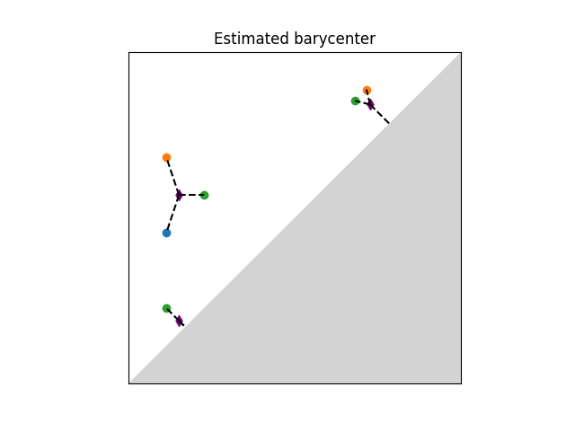

Wasserstein distance user manual#
Definition#

|
The q-Wasserstein distance measures the similarity between two persistence diagrams using the sum of all edges lengths (instead of the maximum). It allows to define sophisticated objects such as barycenters of a family of persistence diagrams. |
|
The q-Wasserstein distance is defined as the minimal value achieved by a perfect matching between the points of the two diagrams (+ all diagonal points), where the value of a matching is defined as the q-th root of the sum of all edge lengths to the power q. Edge lengths are measured in norm p, for \(1 \leq p \leq \infty\).
Distance Functions#
Optimal Transport#
|
This first implementation uses the Python Optimal Transport library and is based on ideas from “Large Scale Computation of Means and Cluster for Persistence Diagrams via Optimal Transport” [].
Hera#
This other implementation comes from Hera (BSD-3-Clause) which is based on “Geometry Helps to Compare Persistence Diagrams” [] by Michael Kerber, Dmitriy Morozov, and Arnur Nigmetov.
- gudhi.hera.wasserstein_distance(X, Y, order=1, internal_p=inf, delta=0.01, matching=False)[source]#
Compute the Wasserstein distance between two diagrams. Points at infinity are supported.
- Parameters:
X¶ (n x 2 numpy array) – First diagram
Y¶ (n x 2 numpy array) – Second diagram
order¶ (float) – Wasserstein exponent W_q
internal_p¶ (float) – Internal Minkowski norm L^p in R^2
delta¶ (float) – Relative error 1+delta
matching¶ (bool) –
if
True, computes and returns the optimal matching between X and Y, encoded as a (n x 2) np.array […[i,j]…], meaning the i-th point in X is matched to the j-th point in Y, with the convention that (-1) represents the diagonal. If the distance between two diagrams is +inf (which happens if the cardinalities of essential parts differ) and the matching is requested, it will be set toNone(any matching is optimal).Warning
For matching request, please consider using
wasserstein_distance()(POT version) instead. This version withmatching=Trueis known to have bugs.
- Returns:
- Approximate Wasserstein distance W_q(X,Y), and optionally the
corresponding matching
- Return type:
float|Tuple[float,numpy.array|None]
Basic example#
This example computes the 1-Wasserstein distance from 2 persistence diagrams with Euclidean ground metric. Note that persistence diagrams must be submitted as (n x 2) numpy arrays.
from gudhi.wasserstein import wasserstein_distance # Could also be: from gudhi.hera import wasserstein_distance
import numpy as np
dgm1 = np.array([[2.7, 3.7],[9.6, 14.],[34.2, 34.974]])
dgm2 = np.array([[2.8, 4.45],[9.5, 14.1]])
print(f"Wasserstein distance value = {wasserstein_distance(dgm1, dgm2, order=1., internal_p=2.):.2f}")
The output is:
Wasserstein distance value = 1.45
We can also have access to the optimal matching by letting matching=True. It is encoded as a list of indices (i,j), meaning that the i-th point in X is mapped to the j-th point in Y. An index of -1 represents the diagonal. It handles essential parts (points with infinite coordinates). However if the cardinalities of the essential parts differ, any matching has a cost +inf and thus can be considered to be optimal. In such a case, the function returns (np.inf, None).
from gudhi.wasserstein import wasserstein_distance # Could also be: from gudhi.hera import wasserstein_distance
import numpy as np
dgm1 = np.array([[2.7, 3.7],[9.6, 14.],[34.2, 34.974], [3, np.inf]])
dgm2 = np.array([[2.8, 4.45], [5, 6], [9.5, 14.1], [4, np.inf]])
cost, matchings = wasserstein_distance(dgm1, dgm2, matching=True, order=1, internal_p=2)
print(f"Wasserstein distance value = {cost:.2f}")
dgm1_to_diagonal = matchings[matchings[:,1] == -1, 0]
dgm2_to_diagonal = matchings[matchings[:,0] == -1, 1]
off_diagonal_match = np.delete(matchings, np.where(matchings == -1)[0], axis=0)
for i,j in off_diagonal_match:
print(f"point {i} in dgm1 is matched to point {j} in dgm2")
for i in dgm1_to_diagonal:
print(f"point {i} in dgm1 is matched to the diagonal")
for j in dgm2_to_diagonal:
print(f"point {j} in dgm2 is matched to the diagonal")
# An example where essential part cardinalities differ
dgm3 = np.array([[1, 2], [0, np.inf]])
dgm4 = np.array([[1, 2], [0, np.inf], [1, np.inf]])
cost, matchings = wasserstein_distance(dgm3, dgm4, matching=True, order=1, internal_p=2)
print("\nSecond example:")
print(f"cost: {cost}")
print(f"matchings: {matchings}")
The output is:
Wasserstein distance value = 3.15
point 0 in dgm1 is matched to point 0 in dgm2
point 1 in dgm1 is matched to point 2 in dgm2
point 3 in dgm1 is matched to point 3 in dgm2
point 2 in dgm1 is matched to the diagonal
point 1 in dgm2 is matched to the diagonal
Second example:
cost: inf
matchings: None
Barycenters#
|
A Frechet mean (or barycenter) is a generalization of the arithmetic mean in a non linear space such as the one of persistence diagrams. Given a set of persistence diagrams \(\mu_1 \dots \mu_n\), it is defined as a minimizer of the variance functional, that is of \(\mu \mapsto \sum_{i=1}^n d_2(\mu,\mu_i)^2\). where \(d_2\) denotes the Wasserstein-2 distance between persistence diagrams. It is known to exist and is generically unique. However, an exact computation is in general untractable. Current implementation available is based on (Turner et al., 2014), [] and uses an EM-scheme to provide a local minimum of the variance functional (somewhat similar to the Lloyd algorithm to estimate a solution to the k-means problem). The local minimum returned depends on the initialization of the barycenter. The combinatorial structure of the algorithm limits its performances on large scale problems (thousands of diagrams and of points per diagram).

Illustration of Frechet mean between persistence diagrams.#
Basic example#
This example estimates the Frechet mean (aka Wasserstein barycenter) between four persistence diagrams. It is initialized on the 4th diagram. As the algorithm is not convex, its output depends on the initialization and is only a local minimum of the objective function. Initialization can be either given as an integer (in which case the i-th diagram of the list is used as initial estimate) or as a diagram. If None, it will randomly select one of the diagrams of the list as initial estimate. Note that persistence diagrams must be submitted as (n x 2) numpy arrays and must not contain inf values.
from gudhi.wasserstein.barycenter import lagrangian_barycenter
import numpy as np
dg1 = np.array([[0.2, 0.5]])
dg2 = np.array([[0.2, 0.7]])
dg3 = np.array([[0.3, 0.6], [0.7, 0.8], [0.2, 0.3]])
dg4 = np.array([])
pdiagset = [dg1, dg2, dg3, dg4]
bary = lagrangian_barycenter(pdiagset=pdiagset,init=3)
print("Wasserstein barycenter estimated:")
print(bary)
The output is:
Wasserstein barycenter estimated:
[[0.27916667 0.55416667]
[0.7375 0.7625 ]
[0.2375 0.2625 ]]
Tutorial#
This notebook presents the concept of barycenter, or Fréchet mean, of a family of persistence diagrams.